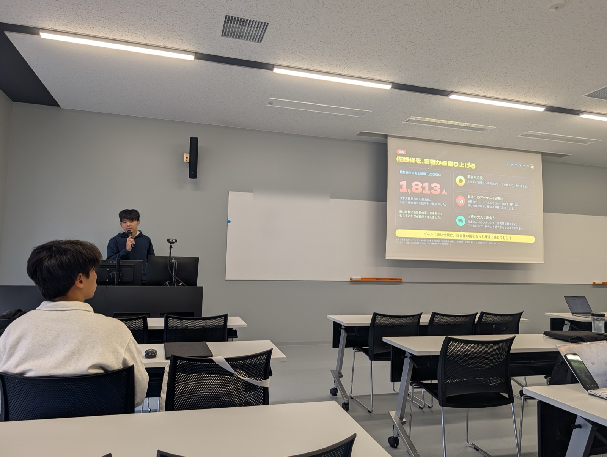
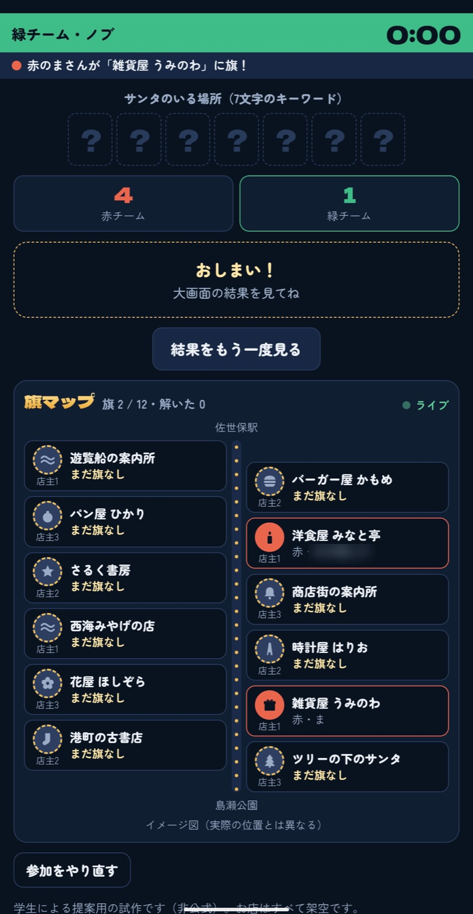
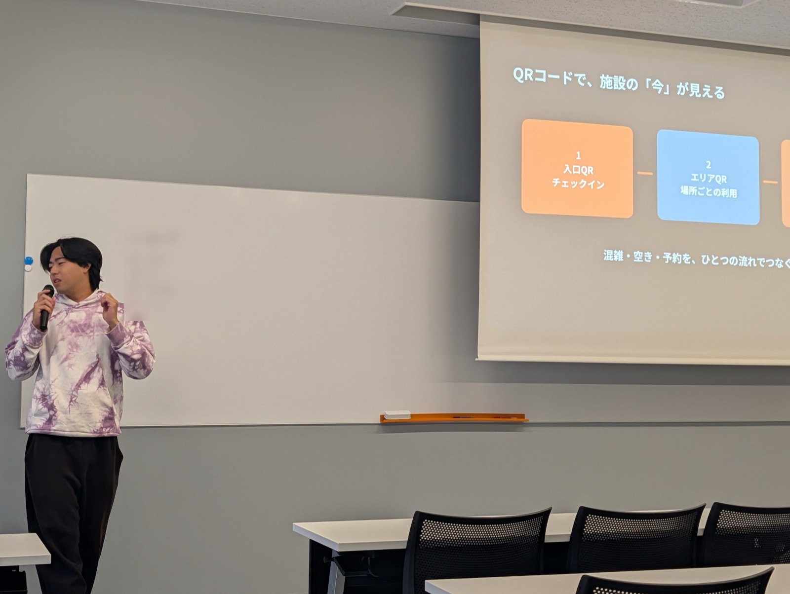
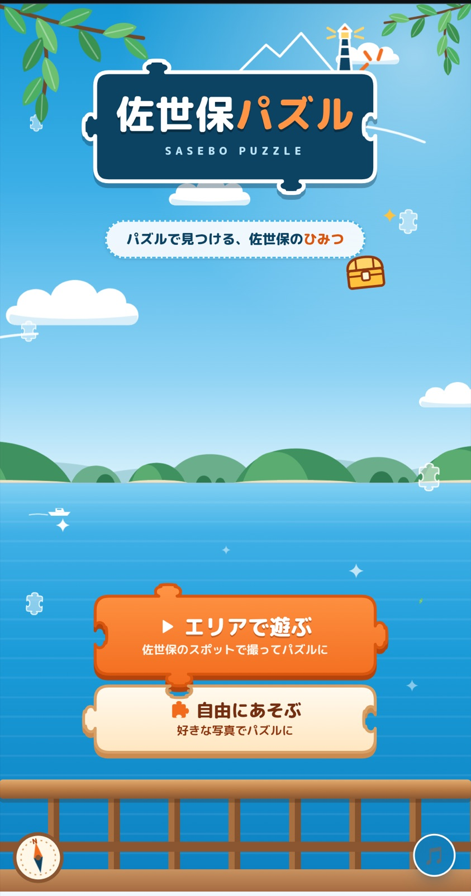
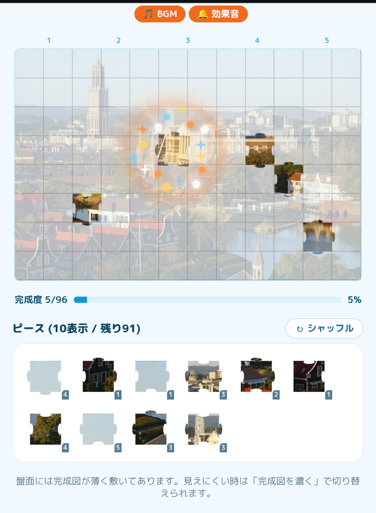

長崎県立大学の学生による自主企画の発表会、2回目。お題は「リアル×ゲーム」で、5人とも佐世保の町を舞台にしたゲームを作ってきました。

11月4日、7月に続いて2回目となる学生の成果物発表会が、長崎県立大学で開かれました。今回のお題は「リアル×ゲーム」。アーケードの陣取り、待ち時間のすれ違い通信、若者の遊び場の予約、町歩きのクエスト、写真のジグソーパズルと、5人とも佐世保の町を舞台にしたゲームを持ち寄っています。デモでは会場の全員がQRコードからスマホで参加し、その場で遊びながら発表を聞く形になりました。司会と進行も学生が担当しています。
事業者側でもそのまま使える考え方だと思った点を4つ挙げます。
観点は、わくわく度（自分がやりたい・友達に紹介したい）、みんなで遊べるか、地域性、AIでどんな仕掛けを作れたか、の4つ。各5点で、話し方のうまさではなくゲームそのものを見て採点する、と最初に説明がありました。
町歩きのクエストでは、Claudeを呼ぶのは最初に物語とミッションを作るときだけ。ゲームの途中では呼ばず、APIのエラーで止まらないようにしています。クイズは裏付けのある情報だけで出し、間違ったことを教えない設計です。
アーケードのゲームは、参加者はQRコードを読むだけでアプリは不要。お店側が用意するのは端末1台と4桁の数字だけです。遊び場の構想も、入口とエリアごとのQRで、混雑・空き・予約をひとつの流れで見られるようにしています。
すれ違い通信のゲームと写真パズルの2本が、バスや電車を待つ時間が長いことを出発点にしていました。町の弱みとして語られがちな点を、遊べる時間として捉え直しています。
大学生と小学生くらいの子が2〜3人でペアを組み、スマホ1台でアーケードのお店を回るクリスマスのゲーム。店主から合言葉を聞いて佐世保の4択クイズに答えると、正解で1ポイント。一番乗りしたチームはそのお店に旗を立てられ、地図がチームの色に染まっていきます。店主から1文字ずつもらい、最後に7文字のキーワードを完成させる仕掛けも。30チームくらいまで同時に遊べるように作ってあり、会場でもその場で全員が参加しました。（2年生）

元にしたのは携帯ゲーム機の「すれ違い通信」。職業（自衛隊・バーガー屋・農家）を選んでアバターを作り、決められた待合所に行くと、同じ日にそこへ来た人と時間差ですれ違えます。後日ログインすると、すれ違った相手とアイテムを交換でき、待合所でしか手に入らないアイテムもあります。メインのゲームは、同じバーガーをぶつけると星が上がっていく合成パズル。貯めたコインで福引をすると、着せ替えや町の名物が当たります。（2年生）
発表者が育った東京の渋谷区には、子どもがアリーナやダンススタジオを無料で使える施設がありました。それを佐世保でやりたい、という構想です。基本は無料にして、ダンススタジオの長期契約や週末のアリーナ貸し出しなど一部を有料にして支える。Claude Codeでは、QRコードで施設の「今」が見えるアプリを作り、どの設備が何人使われているか、この後の予約が何時からかを確認できるようにしています。いきなり建てずに、まずは場所を借りて小さく始める計画です。（2年生）

「本気でこの5人でやりたいと思っています。」（遊び場の発表より）
佐世保には歴史のある場所がたくさんあるのに、普段は気づかずに通り過ぎてしまう。そこで、人数・時間・目的・興味を選ぶと、Claudeがその人向けのクエストと物語を作るゲームにしました。GPSで指定の場所に着くとクイズが出て、正解するとバンズやパティなどの具材がもらえ、最後に自分だけのバーガーが完成します。会場では「2人・1時間・デートグルメ」の条件でデモが行われました。今後は見た目を作り込み、実際のお店のクーポンにつなげたいとのこと。（1年生）
佐世保のスポットから300m以内に入るとカメラが起動し、撮った写真がそのままパズルになります。スポットは数か月ごとに入れ替える予定で、現地に行かなくても好きな写真で遊べます。難易度は100・500・1000ピースの3段階。1000ピースでも迷わないよう、区画の番号と薄い線を出しています。効果音とBGMもClaude Codeで作り、家族や友達と一緒に組むモードもあります。（2年生）


「パズルの何が楽しいかを聞いたら『はめる瞬間』と言われたので、そこが一番気持ちよくなるように作りました。」（発表より要旨）
運営の形も参考になったので、記録しておきます。
フィードバックは「アバター、シークレットのアイテム、通信での交換が全部つながっている」「歩く範囲の広さに対して、クイズがすぐ終わってしまう」「作ったパズルを壁紙のように並べられると特別感が出る」など、遊んだうえでの具体的なものでした。最後に1位として写真パズルが選ばれ、ピースがはまって音が鳴る瞬間の気持ちよさと、作った本人が遊びたくて作っているのが伝わる作り込みが挙げられています。完成したら、商店街や観光協会、観光案内所に企画として持ち込めば、期間限定で実施できる可能性もある、という話も出ました。
学生の発表会は、月1回のペースで続いています。作れば作るほど、使い方の幅が広がっていくと思います。次回の開催も楽しみにしています！そして、来年3月には、こちらの学生メンバーが中心になって、九州の大学生が集まるClaude Community イベントを企画中です。乞うご期待。最新のイベント情報はXをご参照ください。
この回は勉強会の主催イベントではなく、学生の自主企画です。発表者の実名は伏せています。内容は当日の発表の要旨です。